Research
My research connects human movement understanding with adaptive assistance and clinical movement assessment. I combine wearable sensing, machine learning, and control to recognize movement context, estimate joint moments, and develop assistance through wearable robots and functional electrical stimulation. Across these projects, I study how measurements of human movement can inform mobility assistance and rehabilitation.
Research themes
- Human Motion Understanding — Recognizing movement context and estimating joint moments from wearable signals.
- Adaptive Mobility Assistance — Adapting robotic assistance and electrical stimulation to human movement.
- Wearable Movement Assessment — Quantifying movement for clinical assessment and rehabilitation.
Selected research
Locomotion intention detection
Level walking, stairs and ramps involve different ankle movements and moments. An actuated ankle–foot orthosis therefore needs to identify the walking mode before selecting the appropriate assistance. Manual mode switching can be difficult for people with limited motor control, while rule-based detection requires hand-tuned rules. This study tests whether two foot-mounted IMUs and an LSTM can recognise five walking modes in real time and switch the orthosis controller accordingly.
Real-time LSTM-driven gait mode detection for an actuated ankle–foot orthosis
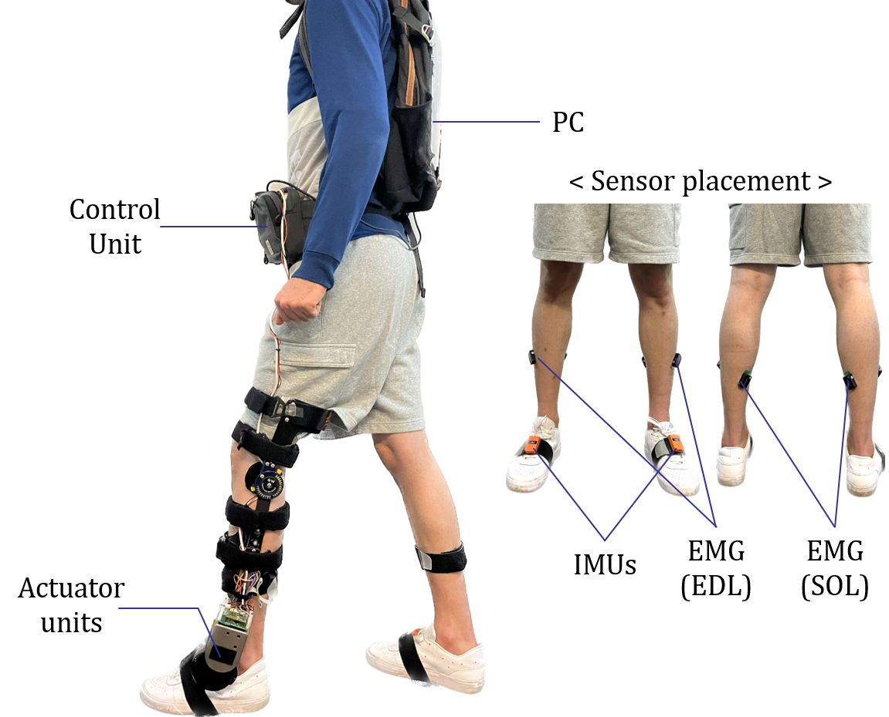
Component roles
- IMUs — one per foot; motion signals drive swing detection and LSTM gait-mode classification.
- AAFO — mode-specific dorsiflexion and plantarflexion assistance: impedance control in stance and trajectory tracking in swing.
- EMG — EDL (front/outer shin) and SOL (rear calf) electrodes record muscle activity to evaluate assistance.
Torque generation
Stance · impedance modulation
Virtual stiffness \(k\), equilibrium angle \(\theta_0\) and damping \(b\) set the ankle torque: \(\tau=-k(\theta-\theta_0)-b\dot\theta\). The torque responds to ankle angle and velocity.
Swing · trajectory tracking
Four ankle-angle key points for the detected gait mode are interpolated into a reference trajectory. PID tracking commands the AAFO torque needed to follow it.
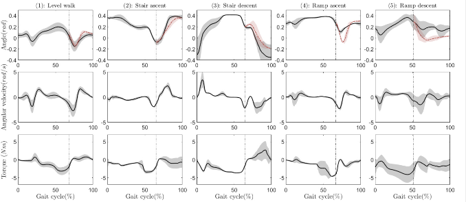
| Method | Accuracy, mean ± SD (%) | F-measure |
|---|---|---|
| k-nearest neighbours | 92.8 ± 1.8 | 0.94 |
| Support vector machine | 93.3 ± 2.0 | 0.94 |
| Random forest | 94.2 ± 1.9 | 0.96 |
| Gradient boosting | 93.2 ± 2.0 | 0.94 |
| LSTM (proposed) | 98.7 ± 0.6 | 0.98 |
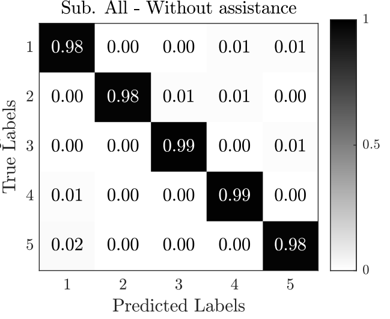
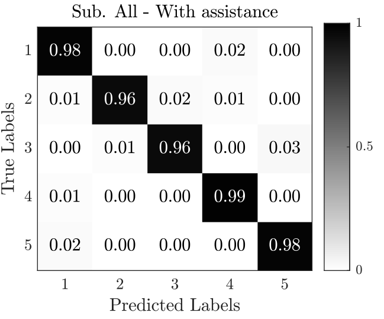
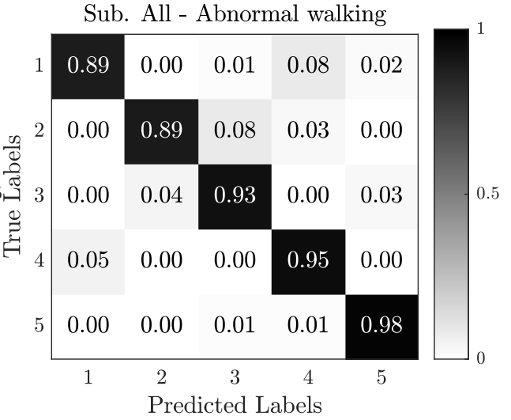
Main experimental result
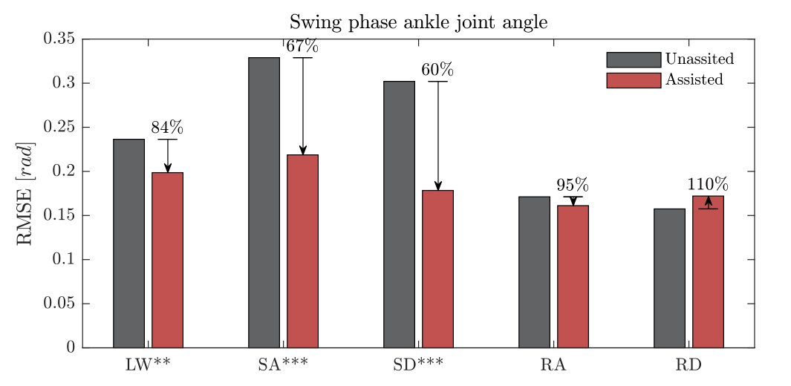
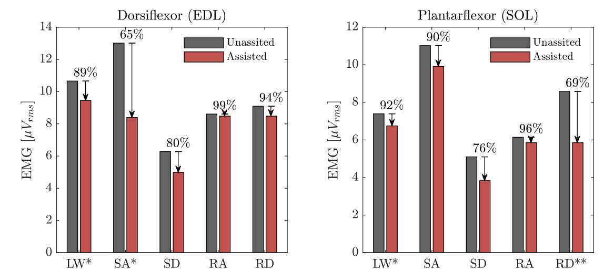
Real-life scenarios
Related work
Control of wearable robots
The three controllers solve different problems. During walking, the ankle orthosis must follow a gait-dependent reference despite uncertain dynamics. During sit-to-stand, an exoskeleton must share the work with the wearer and prevent loss of balance. During knee rehabilitation, the controller must track a safe trajectory within actuator limits at a short sampling period.
Selectively adaptive fuzzy control for ankle assistance
Control problem. A fixed ankle trajectory and fixed controller parameters cannot account for changes across gait subphases or time-varying disturbances. Updating a fuzzy controller continuously also expends control effort when its tracking is already adequate.
The design separates reference generation, control adaptation, and disturbance handling. The adaptive ankle reference generator (AARG) sets the desired ankle angle for the current gait subphase. Particle swarm optimization (PSO) initializes the fuzzy controller before walking. During walking, a Lyapunov-based law updates the fuzzy output singletons only when tracking error crosses a half-Gaussian criterion. A supervisory term monitors the response and counters external disturbances.
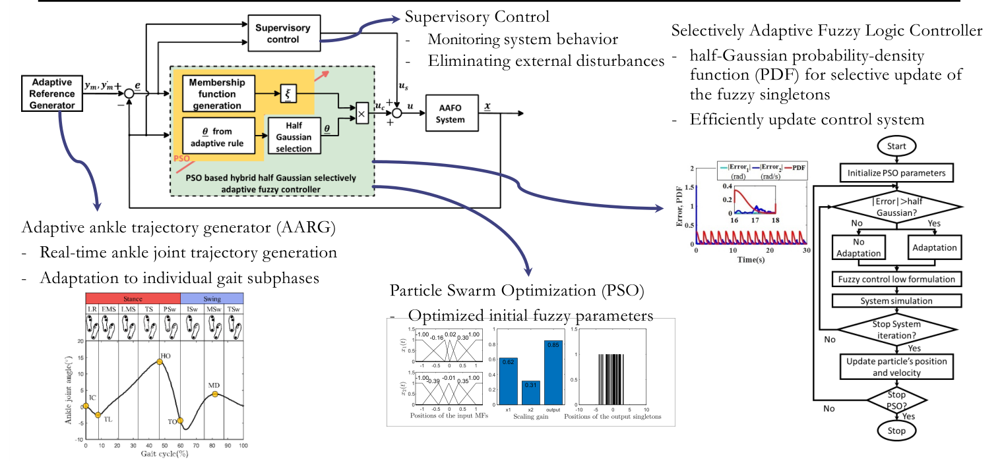
What each part does
Reference and initialization
The AARG sets a gait-subphase-dependent ankle target. PSO selects the fuzzy controller’s initial membership and output parameters before online control begins.
Online correction
Measured ankle motion is compared with the target. Large enough error triggers selective parameter updates; a supervisory term compensates disturbances. Small error leaves the fuzzy parameters unchanged.
Experimental system
- FSR insole identifies foot contact for gait timing.
- Orthosis actuates the ankle; the knee joint remains passive.
- Participants five healthy adults, each walking for two minutes.
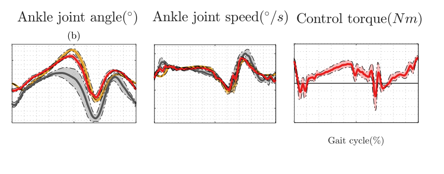
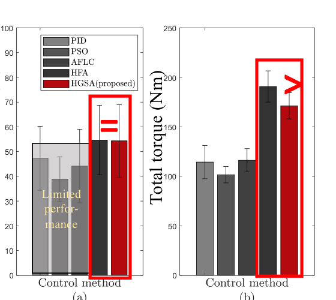
The slides report 52% lower average ankle trajectory tracking error than the unassisted condition and 9.5% less total control torque than full, continuous adaptation. The two comparisons test different claims: the orthosis improves tracking, while selective adaptation reduces the torque cost of control.
Impedance modulation for sit-to-stand assistance
Control problem. A wearer with partial motor ability should still initiate and guide standing up. Simply imposing a fixed joint trajectory can overlook the wearer’s effort and the two common failure patterns examined here: falling back onto the chair (sit-back) or taking a corrective step. The exoskeleton needs to reduce effort while helping the wearer keep the center of mass (CoM) over a safe region.
The controller begins with the wearer’s own movement rather than a prescribed rise. A nonlinear observer estimates the person’s hip and knee torques from joint kinematics, without EMG or force sensors. A time-varying admittance model then defines how the coupled person and exoskeleton should move under those torques. The assistance is reduced as the person moves faster or nears standing; a virtual force acts when the center of mass approaches the balance boundary.
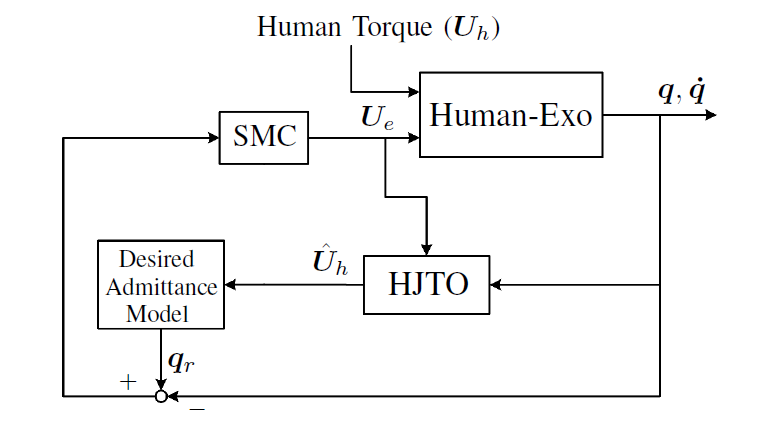
Power and balance assistance
Active impedance modulation
The desired admittance sets a lower-effort response to the estimated human torque. CoM height and velocity adapt the level of assistance to the wearer’s movement ability.
Balance and tracking
A virtual environmental force reinforces balance within a safe CoM region. Sliding-mode control commands the actuated joints to track the combined assistance and balance response.
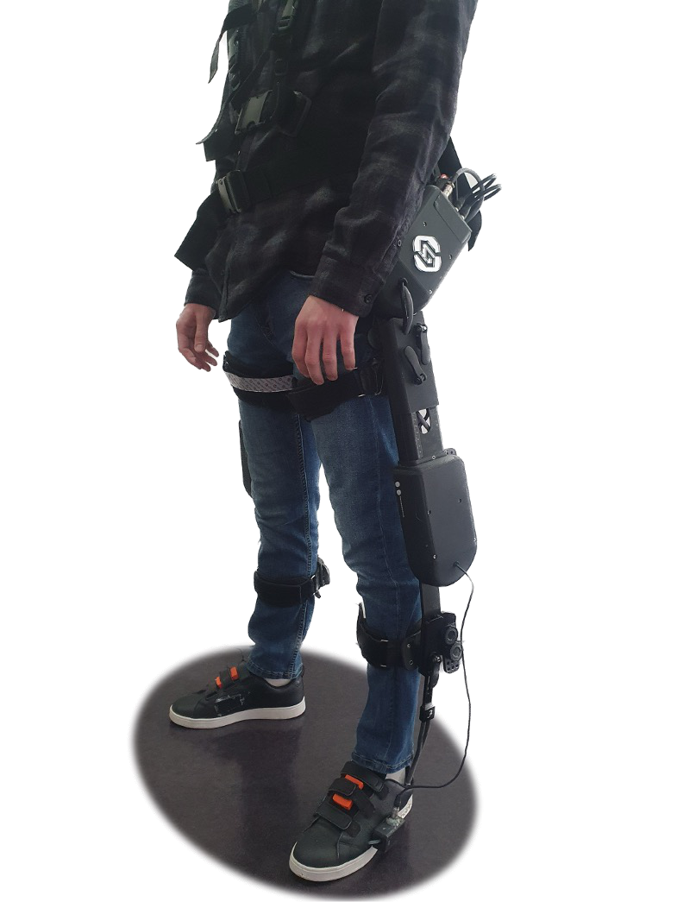
Component roles
- Hip and knee series elastic actuators supply assistance.
- Ankle remains passive.
- Wearer retains control priority; the robot complements available effort and reinforces balance.
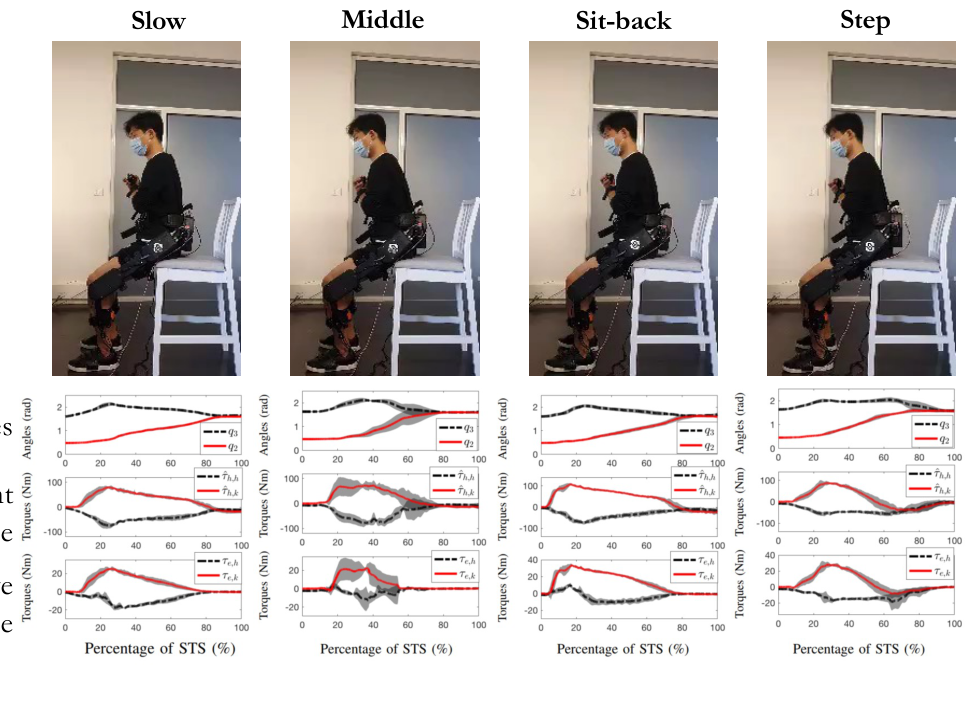
Four healthy participants performed slow and medium-speed rises and the sit-back and step variants. The last two deliberately challenge balance rather than testing only an ideal rise. The paper reports appropriate power assistance and balance reinforcement across these tasks; the selected slides do not provide one aggregate percentage improvement.
Explicit model predictive control for knee rehabilitation
Control problem. A knee orthosis must track a rehabilitation trajectory while accounting for the wearer’s torque and limits on its input and motion. Conventional model predictive control (MPC) repeatedly solves an optimization problem online; the small sampling period needed for walking makes that computation difficult to fit into real time.
The controller links a desired knee trajectory to a model of the wearer and orthosis. Least-squares identification estimates dynamic parameters; a nonlinear disturbance observer estimates wearer torque and outside disturbances. Exact input-to-state feedback linearization makes the model suitable for constrained prediction. Conventional MPC solves for a new action at each step, while explicit MPC precomputes the constrained control law offline and looks up the appropriate action online. Lyapunov analysis addresses closed-loop stability.
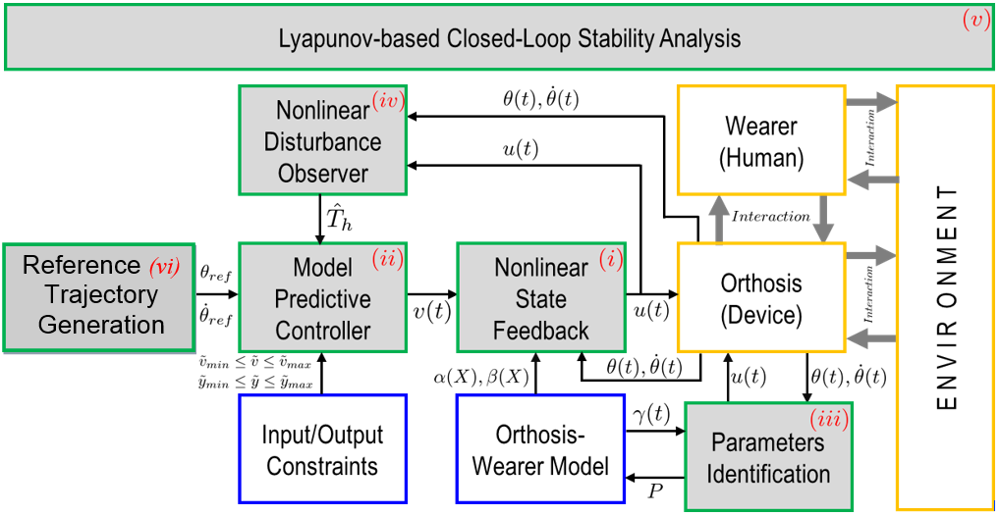
From model to real-time assistance
Identify and estimate
A fixed-time generator supplies the knee reference. Least squares identifies the exoskeleton dynamics; the observer estimates the wearer’s torque so the controller can respond to human–robot interaction.
Predict within limits
MPC accounts for input and output constraints. Explicit MPC stores its solution as an offline lookup table, avoiding a full optimization at each short walking sample.
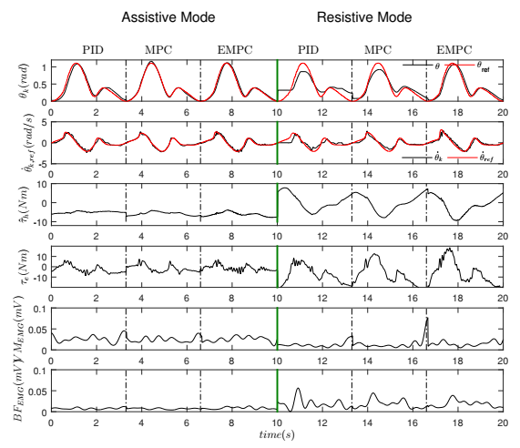
A separate treadmill test included two healthy participants walking while imitating abnormal gait with an active knee orthosis and IMUs. Trajectory error, assistance demand, and muscle activity were measured.
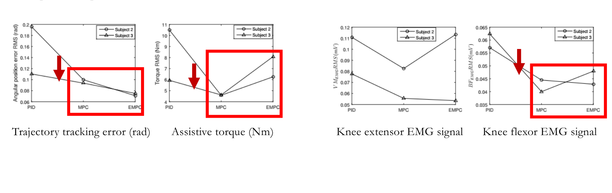
Both predictive variants improve trajectory tracking and reduce energy consumption relative to PID in the reported tests. The knee-flexor (biceps femoris) EMG signal is also lower. The slide does not establish a single best controller for every measure, so the result is presented as the comparison shown rather than a blanket ranking.
Related work
Adaptive FES for foot drop
Foot drop makes it difficult to clear the ground during swing. Functional electrical stimulation (FES) can activate the muscles that lift the foot, but a fixed ON/OFF or trapezoidal pulse does not account for how the knee moves through swing. My first AFES study used knee angle to shape stimulation within each step. The follow-on closed-loop study also changes stimulation magnitude and late-swing timing between steps, using the wearer’s unaffected ankle as a personal reference.
Knee-angle-based adaptive FES
Why knee motion matters. Stimulation needs to lift the foot after toe-off, but knee re-extension near initial contact can stretch the gastrocnemius and oppose ankle dorsiflexion. Keeping stimulation high throughout swing may therefore use current when less is needed. The adaptive profile raises stimulation in initial and terminal swing and relaxes it around peak knee flexion in mid swing.
How stimulation is generated
1 · Detect the swing window
Wearable IMUs detect toe-off (TO) and initial contact (IC). Stimulation is active during the intervening swing phase; the measured knee angle provides the continuous signal that shapes its intensity.
2 · Shape and deliver the pulse
The knee angle scales current between calibrated minimum and maximum levels. Current falls toward its minimum near peak knee flexion, then rises as the knee re-extends. Short ramps smooth the transitions after TO and IC.
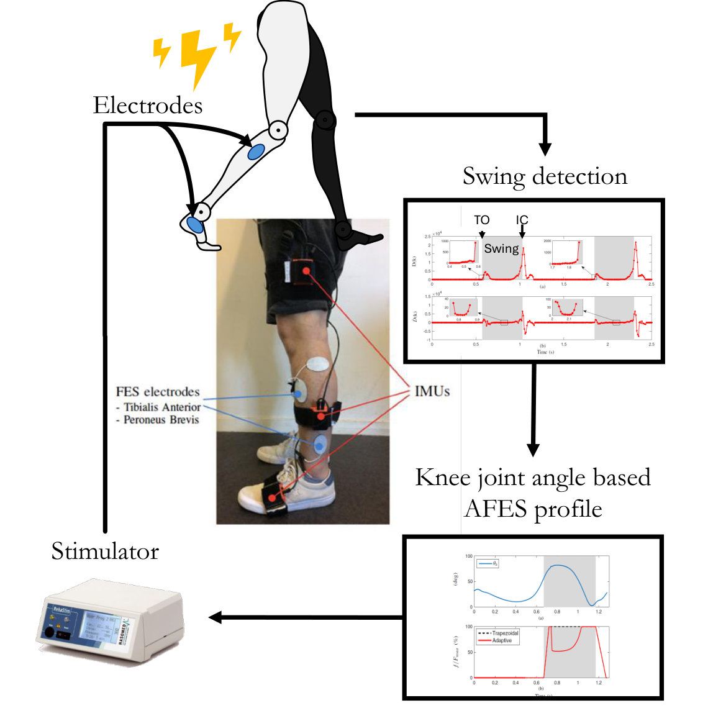
Clinical evaluation
The poster reports 10-m walking tests with three groups of people with hemiplegia and foot drop: AFES (6 participants), placebo (4), and trapezoidal FES (5).
| When | Protocol |
|---|---|
| Day 1 | Baseline 10-m walking evaluation |
| Weeks 1–12 | 45-minute walking-training sessions with the assigned condition |
| Week 12 | Post-training evaluation |
| Weeks 12–24 | No stimulation |
| Week 24 | Follow-up evaluation |
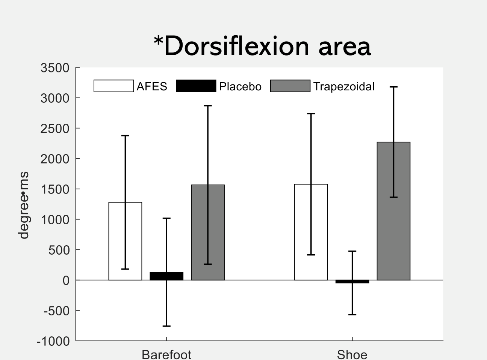
The AFES group achieved a dorsiflexion-area measure of 1278°·ms barefoot and 1577°·ms in shoes. Its dorsiflexion area exceeded the placebo group’s (\(p < 0.005\)) and was statistically similar to the trapezoidal group’s (\(p > 0.05\)). Relative to trapezoidal FES, the poster reports 18.6% less stimulation energy barefoot and 20.4% less in shoes. The selected research slides likewise report comparable mid- and late-swing dorsiflexion with lower stimulation intensity.
Closed-loop FES with phase–magnitude adaptation for drop-foot correction
The first AFES profile changes shape within a swing, but its peak intensity and late-swing restoration timing remain fixed from one step to the next. This follow-on method uses the patient’s unaffected ankle as a subject-specific reference. IMUs segment each leg’s swing independently; after a valid bilateral pair of swings, the ankle trajectories are normalized to the same 0–100% swing scale and compared. The controller updates two different parameters for the next affected-side swing.
Two separate adaptation rules
Magnitude · how much stimulation
After compensating for phase lag, a terminal-swing dorsiflexion difference adjusts the peak stimulation level. If the affected ankle still dorsiflexes less, the rule can increase the next pulse within the calibrated range.
Phase · when stimulation returns
A lead or lag between the ankle trajectories changes the knee-angle threshold at which stimulation rises again in late swing. Small errors inside a deadband do not trigger an update; an invalid bilateral cycle retains the previous settings.
| Item | Description |
|---|---|
| Participants | 5 people with post-stroke hemiparesis and foot drop |
| Walking | Level ground, slow and fast speed |
| Conditions | No stimulation, trapezoidal FES, fixed-parameter AFES, proposed method |
| Sensors | IMUs on both lower limbs; surface electrodes on the affected-side tibialis anterior |
Participant-level outcomes
| Condition | Slow walking | Faster walking |
|---|---|---|
| No FES | 7.192 ± 1.750 | 6.218 ± 1.870 |
| Trapezoidal FES | 3.426 ± 0.449 | 3.675 ± 1.498 |
| Fixed-parameter AFES | 4.655 ± 0.930 | 3.746 ± 0.804 |
| Phase–magnitude AFES | 2.302 ± 0.518 | 2.509 ± 0.618 |
The proposed method had the lowest mean bilateral ankle-angle error at both speeds. The submitted manuscript also reports the highest ankle-trajectory similarity and lower stride-to-stride error variation. Its fixed-parameter AFES comparator shared the same initial settings but was not individually optimized; the results should be read in that context. These are outcomes from the five-participant study under review, separate from the earlier 12-week clinical poster.
Related work
- Adaptive FES with Gait-Phase Detection (IROS, 2018)
- Hybrid FES–Orthosis Foot-Drop Assistance (ICRA, 2021)
- Phase–Magnitude Adaptive FES for Foot Drop (IEEE TNSRE, 2026; under review)
Wearable gait assessment during self-rehabilitation
How does walking change during guided self-rehabilitation after stroke? In a prospective cohort study, wearable sensors measured gait over eight weeks. The analysis compares participants following a guided self-rehabilitation contract (GSC) with those without one (non-GSC).
From wearable sensors to gait measures
Seven 100 Hz Xsens IMUs were placed on the pelvis, both thighs, both shanks, and both feet. Their signals were used to estimate lower-limb joint motion and walking measures during the 10-metre ambulation test (AT10).
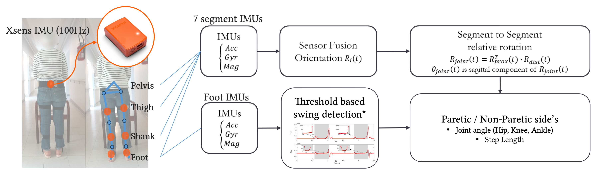
Clinical protocol
The single-centre study at Henri-Mondor Hospital included 26 people with post-stroke hemiparesis (15 GSC; 11 non-GSC) and 30 healthy controls. Participants completed AT10 in four conditions: shoes or barefoot, each at comfortable or maximal speed.
| Visit | Purpose |
|---|---|
| D1 | Familiarisation |
| D14 | Baseline |
| D28 and D42 | Interim assessments, two weeks apart |
| D56 | End-point assessment |
Joint angles through the gait cycle
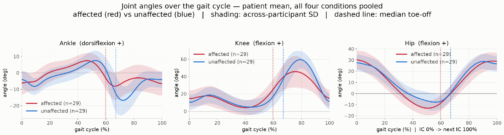
Related work
- Gait Changes During Guided Self-Rehabilitation (JNER, 2026; under review)
Other assessment work
I have also used a portable IMU alternometer to quantify forearm pronation–supination for assessment of parkinsonian motor impairment.